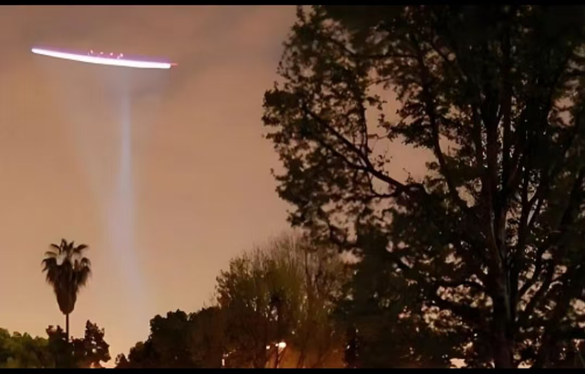

20260811行走的时候，气场能量感觉不丢，就是行走中修炼
修炼修行符咒术法想起在杭州，空中有一个橘红色的球，从东往西飞
没有螺旋桨
沙发那么大
飞的很平稳
不是很高
看的很清晰
到现在不解，是什么

这是2010年，萧山机场不明飞行物
一段时间后，又在上海机场出现
光照很强
机场被迫停飞一个多小时
每日晨起，
四点读经
读经就已经很玄妙了
读着读着心就跑了
跑到一个地方，听经去了
经里没有的知识
讲到明
天眼通还不够，要天眼明
五眼六通的进一步修习
漏尽通，还有个漏尽明
讲的非常详细
我都储存记忆了
非常清晰，
感觉又能写一本书了
不忍离开那个场景
直到听完，回来一搜
还真的有这些修法
[呲牙][呲牙][呲牙]
是真的有这些名词
没有啥修法，只要进一步入定就行
那老者坐的地方，整个就是蓝水晶洞
各种颜色的珠宝
老者是无色透明的，
这是修炼心法境界
试一下，自己能看到透明的神佛了吗
能看到的话，反过来看，自己是不是透明的
自己透明了，再去看自己的大脑，内脏
从上到下看
一次一次看，就看清楚了
继续看，骨骼，筋脉，神经，血管，血液，骨髓
先内视透视
练成了，就能透视他人
慧眼见空，法眼见有，空有不二，是为明修
[强][强][强]
当地一女学生过来
说两太阳穴往里刹的疼
问原因
看到，手机
但手机气色正常
继续显示，手机里面
是内容
杂黄
这就是说，手机看的时间长，并且里面有负面信息
负场干扰的太阳穴疼
对的，直接把快手删了
功能又提升了
[呲牙][呲牙][呲牙]
[强][强][强]
那教授还没来学
读经中，竟然看到了
犹疑不定
又看到他到了一条大河边
有船在逆流而上
脑海里出了一句，苦海无边自己度
不来当舍之意
行住坐卧皆是禅
原来有更细节修法
行，以前以为，就是行走的时候，气场能量感觉不丢，就是行走中修炼
原来是修妙觉
脚未抬，体察脚上的感觉
后脚跟始离地，脚尖未动，这时候脚上的感觉，
整个脚离地，未前行，脚上的感觉
脚前行，脚上的感觉
脚落地，脚尖落地，后跟未落地的感觉
脚掌落地，脚上的感觉
另一只脚，重复这些动作，微妙感觉
这是修行
行，修
手放在哪里，身体的感觉
名叫感觉
谁在感觉
不离心性二字
读到大王一日十事，一事十功德
做任何事都要赞美
祝愿
你看王穿新衣服
具十功德
一，增长智慧
二，行步适悦
三，眷属爱敬
四，处众无畏
五，安乐身心
六，能益寿命
七，净无尘垢
八，名称远闻
九，贤圣护念
十，一切赞叹
穿个衣服，都有这么多祝词
这一日十事十功德，值得学习
早饭后嚼杨枝
一，消宿食
二，除痰饮
三，解众毒
四，去齿垢
五，发口香
六，能明目
七，泽润咽喉
八，唇无皴裂
九，增益声气
十，食不爽味
心有所归，哪里都清净
四十华严，这一本就五百页，每天四点起来，才读了120页
时间不够用
修经
读经
截然不是一回事
读经，你在读经
诚心念经，你是善财童子
修经 你是五十三智者